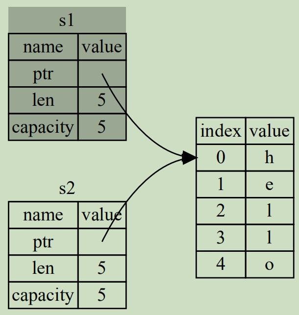

Rust所有權規則概述
Rust的所有權(ownership)規則貫穿整個語言，幾乎每行代碼都涉及到所有權規則，因此需要對所有權規則非常熟悉才能更好地使用Rust。
Rust所有權規則可以總結為如下幾句話：
- Rust中的每個值都有一個被稱為其所有者的變量(即：值的所有者是某個變量)
- 值在任一時刻有且只有一個所有者
- 當所有者(變量)離開作用域，這個值將被銷燬
這裡對第三點做一些補充性的解釋，所有者離開作用域會導致值被銷燬，這個過程實際上是調用一個名為drop的函數來銷燬數據釋放內存。在前文解釋作用域規則時曾提到過，銷燬的數據特指堆棧中的數據，如果變量綁定的值是全局內存區內的數據，則數據不會被銷燬。
例如：
fn main(){ { let mut s = String::from("hello"); } // 跳出作用域，棧中的變量s將被銷燬，其指向的堆 // 中數據也被銷燬，但全局內存區的字符串字面量仍被保留 }
誰是誰的所有者
Rust中每個值都有一個所有者，但這個說法比較容易產生誤會。
例如：
#![allow(unused)] fn main() { let s = String::from("hello"); }
多數人可能會誤以為變量s是堆中字符串數據hello的所有者，但實際上不是。
前面介紹內存的文章中解釋過，String字符串的實際數據在堆中，但是String大小不確定，所以在棧中使用一個胖指針結構來表示這個String類型的數據，這個胖指針中的指針指向堆中的String實際數據。也就是說，變量s的值是那個胖指針，而不是堆中的實際數據。
因此，變量s是那個胖指針的所有者，而不是堆中實際數據的所有者。
但是，由於胖指針是指向堆中數據的，多數時候為了簡化理解簡化描述方式，也經常會說s是那個堆中實際數據的所有者。但無論如何描述，需要理解所有者和值之間的真相。
Rust中數據的移動
在其他語言中，有深拷貝和淺拷貝的概念，淺拷貝描述的是隻拷貝數據對象的引用，深拷貝描述的是根據引用遞歸到最終的數據並拷貝數據。
在Rust中沒有深淺拷貝的概念，但有移動(move)、拷貝(copy)和克隆(clone)的概念。
看下面的賦值操作，在其他語言中這樣賦值是正確的，但在Rust中這樣的賦值會報錯。
fn main(){ let s1 = String::from("hello"); let s2 = s1; // 將報錯error: borrow of moved value: `s1` println!("{},{}", s1, s2); }
上面的示例中，變量s1綁定了String字符串數據(再次提醒，String數據是胖指針結構而不是指堆中的那些實際數據)，此時該數據的所有者是s1。
當執行let s2 = s1;時，將不會拷貝堆中數據賦值給s2，也不會像其他語言一樣讓變量s2也綁定堆中數據(即，不會拷貝堆數據的引用賦值給s2)。
因此，下圖的內存引用方式不適用於Rust。
如果Rust採用這種內存引用方式，按照Rust的所有權規則，變量在跳出作用域後就銷燬堆中對應數據，那麼在s1和s2離開作用域時會導致二次釋放同一段堆內存，這會導致內存汙染。
Rust採用非常直接的方式，當執行let s2 = s1;時，直接讓s1無效(s1仍然存在，只是變成未初始化變量，Rust不允許使用未初始化變量，可重新為其賦值)，而是隻讓s2綁定堆內存的數據。也就是將s1移動到s2，也稱為值的所有權從s1移給s2。
如圖：

所有權移動後修改數據
定義變量的時候，加上mut表示變量可修改。當發生所有權轉移時，後擁有所有權的變量也可以加上mut。
#![allow(unused)] fn main() { let mut x = String::from("hello"); // x將所有權轉移給y，但y無法修改字符串 let y = x; // y.push('C'); // 本行報錯 let a = String::from("hello"); // 雖然a無法修改字符串，但轉移所有權後，b可修改字符串 let mut b = a; b.push('C'); // 本行不報錯 }
移動真的只是移動嗎？
比如下面的示例：
#![allow(unused)] fn main() { let s1 = String::from("hello"); let s2 = s1; }
上面已經分析過，值的所有權會從變量s1轉移到變量s2，所有權的轉移，涉及到的過程是拷貝到目標變量，同時重置原變量到未初始狀態，整個過程就像是進行了一次數據的移動。但注意，上面示例中拷貝的是棧中的胖指針，而不是拷貝堆中的實際數據，因此這樣的拷貝效率是相對較高的。
所有權轉移之後，將只有新的所有者才會指向堆中的實際數據，而原變量將不再指向堆中實際數據，因此所有權轉移之後仍然只有一個指針指向堆中數據。
Move不僅發生在變量賦值過程中，在函數傳參、函數返回數據時也會Move，因此，如果將一個大對象(例如包含很多數據的數組，包含很多字段的struct)作為參數傳遞給函數，是否會讓效率很低下？
按照上面的結論來說，確實如此。但Rust編譯器會對Move語義的行為做出一些優化，簡單來說，當數據量較大且不會引起程序正確性問題時，它會傳遞大對象的指針而非內存拷貝。
此外，對於胖指針類型的變量(如Vec、String)，即使發生了拷貝，其性能也不差，因為拷貝的只是它的胖指針部分。
總之，Move雖然發生了內存拷貝，但它的性能並不會太受影響。
此處部分結論參考：https://stackoverflow.com/questions/30288782/what-are-move-semantics-in-rust。
Copy語義
默認情況下，在將一個值保存到某個位置時總是進行值的移動(實際上是拷貝)，使得只有目標位置才擁有這個值，而原始變量將變回未初始化狀態，也就是暫時不可用的狀態。這是Rust的移動語義。
Rust還有Copy語義，和Move語義幾乎相同，唯一的區別是Copy後，原始變量仍然可用。
前面說過，Move實際上是進行了拷貝，只不過拷貝後讓原始變量變回未初始化狀態了，而Copy的行為，就是保留原始變量。
但Rust默認是使用Move語義，如果想要使用Copy語義，要求要拷貝的數據類型實現了Copy Trait。
例如，i32默認就已經實現了Copy Trait，因此它在進行所有權轉移的時候，會自動使用Copy語義，而不是Move語義。
#![allow(unused)] fn main() { let x = 3; // 3是原始數據類型，它直接存儲在棧中，所以x變量的值是3，x擁有3 let n = x; // Copy x的值(即3)到變量n，n現在擁有一個3，但x仍然擁有自己的3 }
Rust中默認實現了Copy Trait的類型，包括但不限於：
- 所有整數類型，比如u32
- 所有浮點數類型，比如f64
- 布爾類型，bool，它的值是true和false
- 字符類型，char
- 元組，當且僅當其包含的類型也都是Copy的時候。比如
(i32, i32)是Copy的，但(i32, String)不是 - 共享指針類型或共享引用類型
對於那些沒有實現Copy的自定義類型，可以手動去實現Copy(要求同時實現Clone)，方式很簡單：
#![allow(unused)] fn main() { #[derive(Copy, Clone)] struct Abc(i32, i32); }
下面是實現了Copy和未實現Copy時的一個對比示例：
#[derive(Debug)] struct Xyz(i32, i32); #[derive(Copy, Clone, Debug)] struct Def(i32, i32); fn main() { let x = Xyz(11, 22); let y = x; // println!("x: {}", x); // 報錯 println!("y: {:?}", y); let d = Def(33, 44); let e = d; println!("d: {:?}", d); println!("e: {:?}", e); }

克隆數據
雖然實現Copy Trait可以讓原變量繼續擁有自己的值，但在某些需求下，不便甚至不能去實現Copy。這時如果想要繼續使用原變量，可以使用clone()方法手動拷貝變量的數據，同時不會讓原始變量變回未初始化狀態。
fn main(){ let s1 = String::from("hello"); // 克隆s1，克隆之後，變量s1仍然綁定原始數據 let s2 = s1.clone(); println!("{},{}", s1, s2); }
但不是所有數據類型都可以進行克隆，只有那些實現了Clone Trait的類型才可以進行克隆(Trait類似於面嚮對象語言中的接口，如果不瞭解可先不管Trait是什麼)，常見的數據類型都已經實現了Clone，因此它們可以直接使用clone()來克隆。
對於那些沒有實現Clone Trait的自定義類型，需要手動實現Clone Trait。在自定義類型之前加上#[derive(Copy, Clone)]即可。例如：
#![allow(unused)] fn main() { #[derive(Copy, Clone)] struct Abc(i32, i32); }
這樣Abc類型的值就可以使用clone()方法進行克隆。
要注意Copy和Clone時的區別，如果不考慮自己實現Copy trait和Clone trait，而是使用它們的默認實現，那麼：
- Copy時，只拷貝變量本身的值，如果這個變量指向了其它數據，則不會拷貝其指向的數據
- Clone時，拷貝變量本身的值，如果這個變量指向了其它數據，則也會拷貝其指向的數據
也就是說，Copy是淺拷貝，Clone是深拷貝，Rust會對每個字段每個元素遞歸調用clone()，直到最底部。
例如：
fn main() { let vb0 = vec!["s1".to_string()]; let v = vec![vb0]; println!("{:p}", &v[0][0]); // 0x21c43a20c50 let vc = v.clone(); println!("{:p}", &vc[0][0]); // 0x21c43a20b70 }
所以，使用Clone的默認實現時，clone()操作的性能是較低的。但可以自己實現自己的克隆邏輯，也不一定總是會效率低。比如Rc，它的clone用於增加引用計數，同時只拷貝少量數據，它的clone效率並不低。
函數參數和返回值的所有權移動
函數參數類似於變量賦值，在調用函數時，會將所有權移動給函數參數。
函數返回時，返回值的所有權從函數內移動到函數外變量。
例如：
fn main(){ let s1 = String::from("hello"); // 所有權從s1移動到f1的參數 // 然後f1返回值的所有權移動給s2 let s2 = f1(s1); // 注意，println!()不會轉移參數s2的所有權 println!("{}", s2); let x = 4; f2(x); // 沒有移動所有權，而是拷貝一份給f2參數 } // 首先x跳出作用域， // 然後s2跳出作用域，並釋放對應堆內存數據， // 最後s1跳出作用域，s1沒有所有權，所以沒有任何其他影響 fn f1(s: String) -> String { let ss = String::from("world"); println!("{},{}", s,ss); s // 返回值s的所有權移動到函數外 } // ss跳出作用域 fn f2(i: i32){ println!("{}",i); } // i跳出作用域
很多時候，變量傳參之後丟失所有權是非常不方便的，這意味著函數調用之後，原變量就不可用了。為了解決這個問題，可以將變量的引用傳遞給參數。引用是保存在棧中的，它實現了Copy Trait，因此在傳遞引用時，所有權轉移的過程實際上是拷貝了引用，這樣不會丟失原變量的所有權，效率也更高。